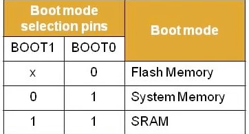

Start Sequence
STM32 can start execute program from three location. 1). flash; 2). system memory; 3). SRAM
It can be configure by the boot pins (boot1 and boot0, they are not pins of GPIO)

Start from system memory or flash
The memory address space (boot space) from 0x0000_0000 to 0x0800_0000 can map to either the flash memory or system memory. It depends on the boot pins. For example, when boot1 = 0 and boot0 = 1, this section maps to system memory.
The PC (program counter) starts from 0x0000_0004, to load the reset handler address. It is equivalent to load from the 0x1fff_f004.
A linear memory translation (MMU, hahaha). The program code use the boot space (virtual address), but the hardware use either flash memory or system memory (physical address).
Start from SRAM
Because SRAM cannot be mapped to the boot space. Without the translating, the program has to directly use the physical address. Including the vector table, it has to add an offset.
//SRAM_BASE = 0x2000_0000 physical
//VECT_TAB_OFFSET = 0x0000_0000
//FLASH_BASE = 0x0000_0000 virtual
#ifdef VECT_TAB_SRAM
SCB->VTOR = SRAM_BASE | VECT_TAB_OFFSET; /* Vector Table Relocation in Internal SRAM. */
#else
SCB->VTOR = FLASH_BASE | VECT_TAB_OFFSET; /* Vector Table Relocation in Internal FLASH. */
#endif